- Admin has full control.
- Admin can tune the Timesheet 365 application.
- Admin can edit or delete the approved timesheet.
- Admin can approve the timesheet for all projects if approval settings are enabled.
- Can submit the timesheet on behalf of their project team members.
- Can view the pending timesheet for the week of the user and send the reminder notification.
- Can approve timesheets for their project managers and project team members.
- Can add tasks and activities to their projects.
- Can view and download the timesheet report of their projects.
- Can approve timesheets for their project team members.
- Can add tasks and activities to their projects.
- Can submit the timesheet on behalf of their project team members.
- Can view and download the timesheet reports of their projects.
- Can add tasks and activities to their projects.
- Can view and download the timesheet report of their projects.
- Can just view all clients, projects, tasks, and task status.
- Can view and download the timesheet report of all projects.
- Just submit the timesheet and view their timesheet status.
- Can’t access the application.
Users
The page now includes Active Users and Inactive Users tabs, allowing admins to easily toggle between and manage users based on their activity status within the system.Admin can add users over here with various roles like the user, project manager, program manager, project observer, and coordinator. Use Add button to add a single user and use the Add Bulk button to add multiple users. Updated user details (Title, department, and manager name) in M365 can be updated same in the user page by clicking on Sync from M365 button.
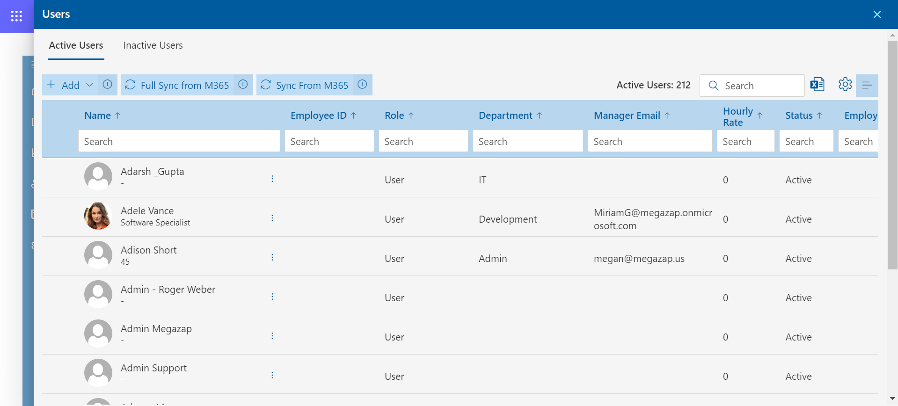
Click the Add User button to manually add a new user to the TS365 application.
To add a new user, input the employee's details such as Employee ID, Name, Role, and Department. Ensure the mandatory fields like Name and Manager Email are filled out before saving.
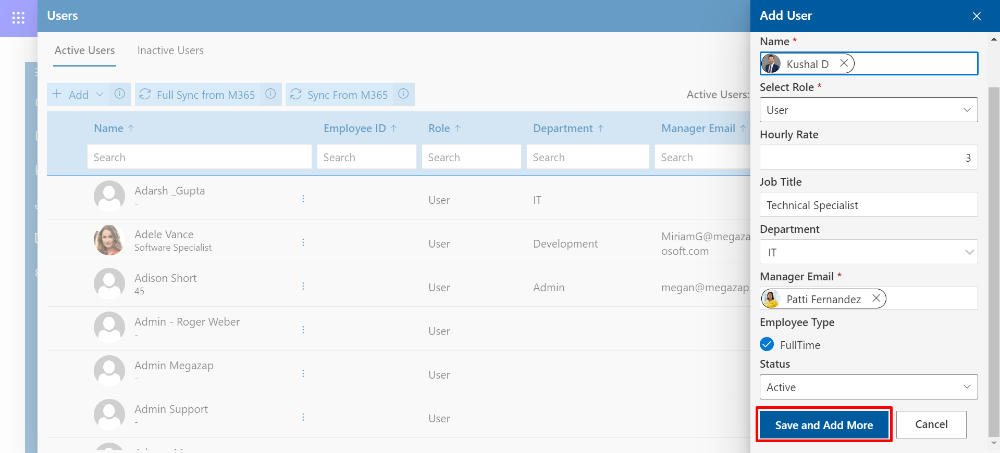
Click the Bulk Add button to import multiple users at once using a bulk upload method.
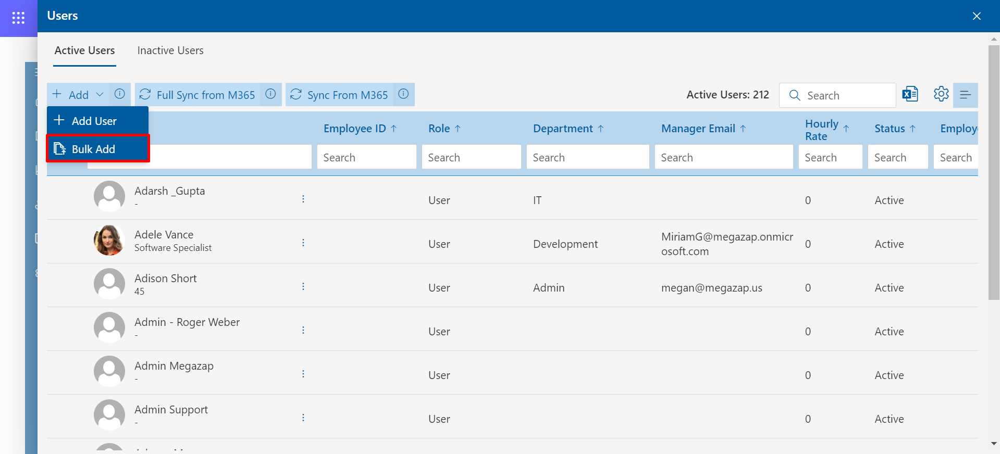
To bulk add users, upload a properly formatted file containing user details and click the "Upload" button. Ensure all mandatory fields like Name, Role, and Manager Email are included.
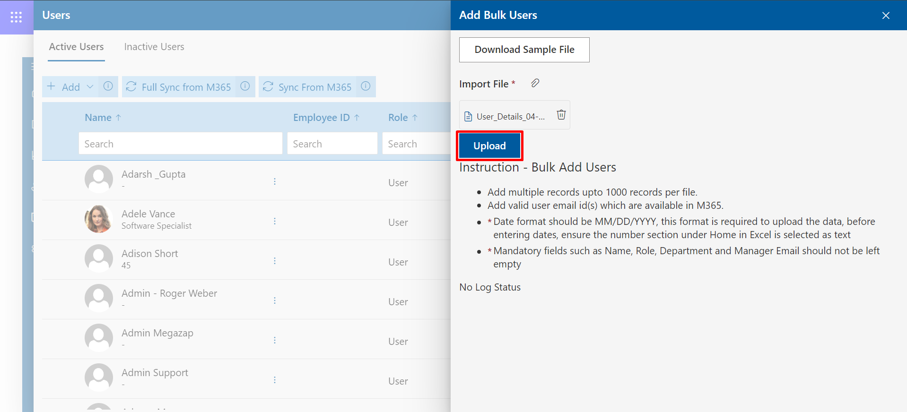
Importance of Roles and permissions:
Admin:
Program Manager:
Project Manager:
Project Observer:
Project Coordinator:
Users:
For data integrity and compliance, users who have submitted weekly timesheets cannot be deleted from the system. This ensures the preservation of critical historical records. Only users with no timesheet submissions are eligible for deletion by administrators.
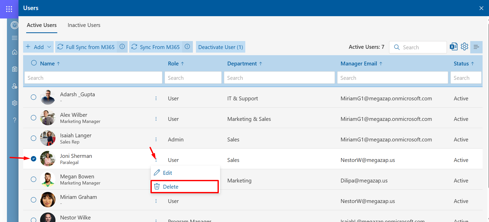
To permanently delete a user, click the Confirm button after selecting the desired user.
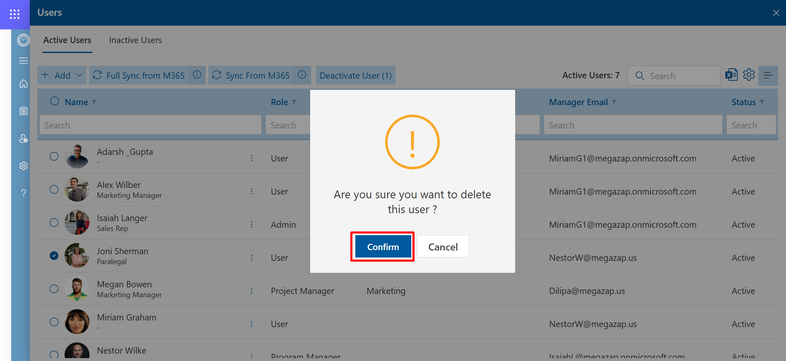
Note: Some users were not deleted because they have submitted timesheets. Users with submitted timesheets cannot be removed to maintain data integrity.
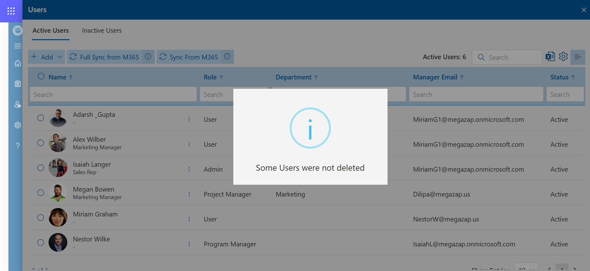
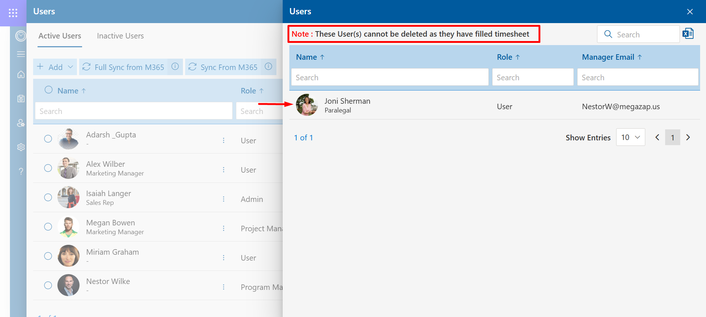
Users with submitted timesheets cannot be deleted to ensure data integrity and preserve historical records.
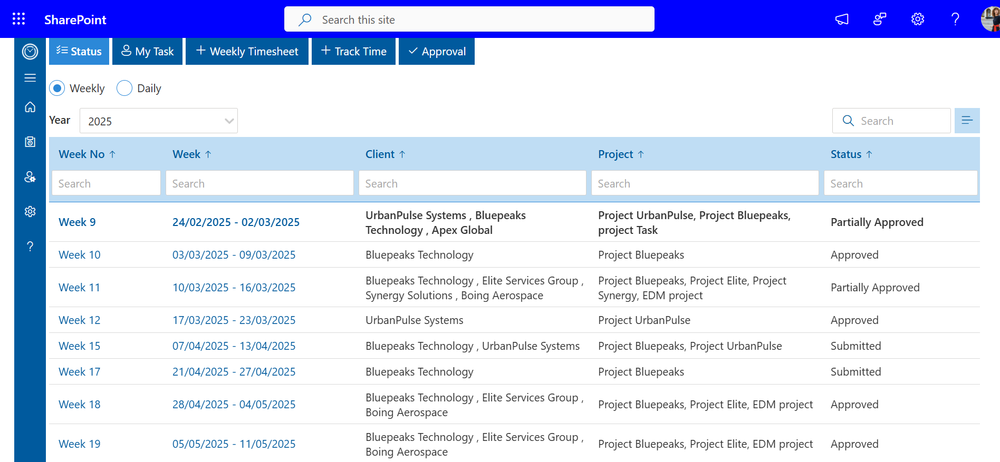
If a user needs to be deactivated instead of deleted, administrators must first select the user within the application and then click the Deactivate button. Once deactivated, the user will no longer appear in the active list and will be moved to the Inactive tab for reference or reactivation.
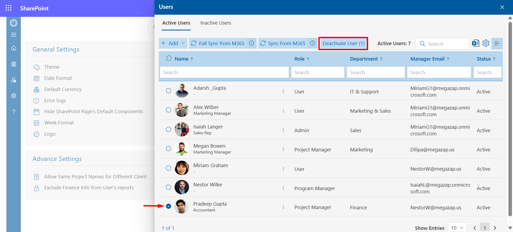
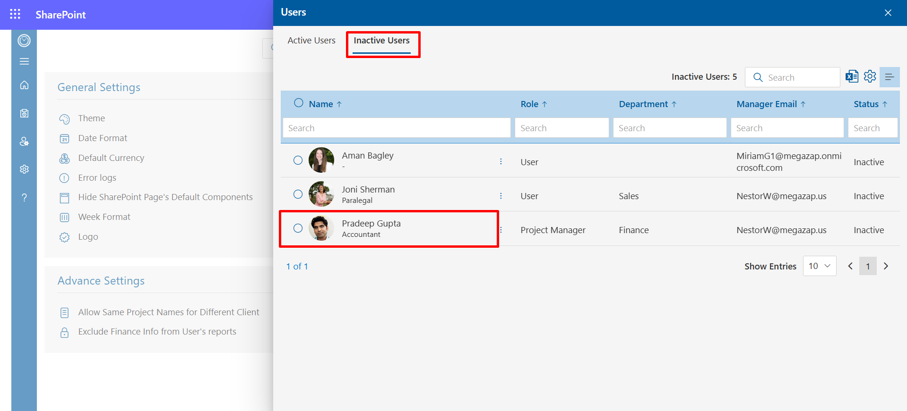
Full Sync for Users: This feature allows administrators to synchronize all user data from an external directory or source (such as Microsoft 365) into the system. It ensures that user information like names, emails, and roles are up to date and accurately reflected in the application.
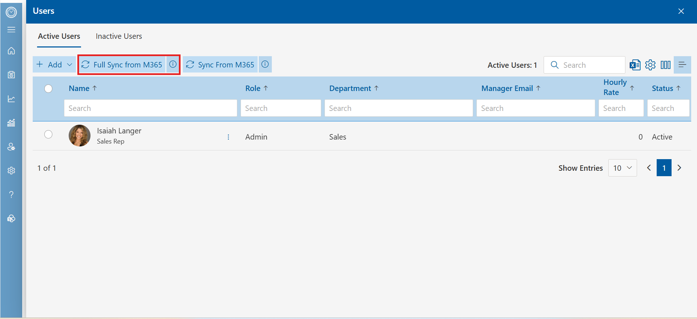
Update from M365: This option allows administrators to refresh or update existing user details from Microsoft 365. It syncs only the latest changes (such as name, email, or role updates) for already added users without performing a full sync. To include or exclude specific groups before syncing, use the setting option on the right side of the page.
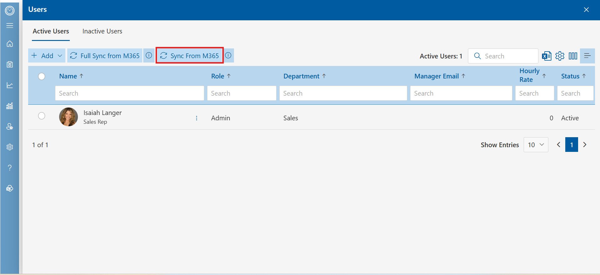
Click on Setting Icon.
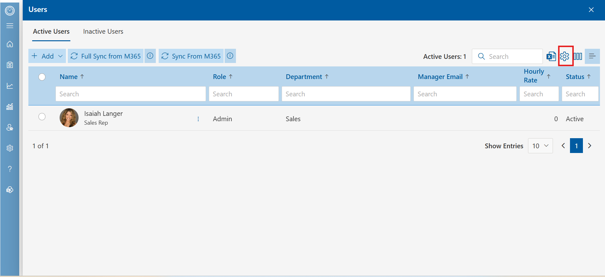
- Overwrite user details: If enabled, it updates existing user details during sync.
- Exclude Options / Sync M365 Groups: Choose to either exclude specific user types or sync users based on M365 groups.
- Exclude Sign in Blocked Users: Prevents blocked users from being synced.
- Exclude Unlicensed Users: Filters out users without any license.
- Exclude Licensed Users: Excludes users with licensed or free license and a valid subscription.
- Exclude Free Licensed Users: Removes users who only have a free license.
- Exclude User by Department: Allows filtering users by department.
- Exclude User by Location: Lets you exclude users based on their location.
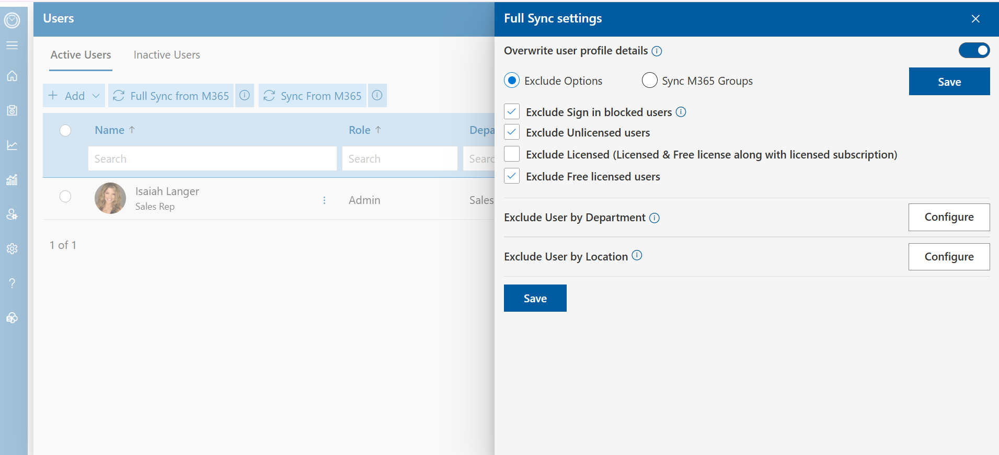
Advance Permissions
The Advance Permissions settings allow administrators to manage rules surrounding timesheet submission windows, editing privileges, historical data synchronization, and project billing behaviors.
Accessing Advance Permissions
To configure these options, navigate to the settings dashboard and select Advance Permissions under the Users, Roles and Permissions section. This launches the configuration panel where administrative control policies can be adjusted.
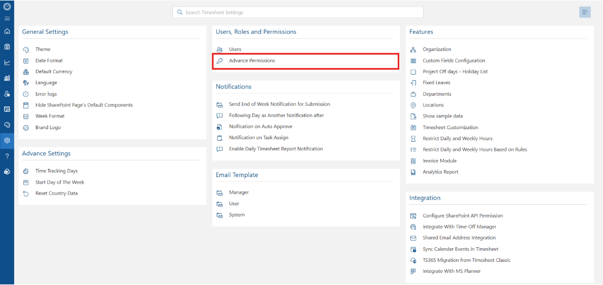
Timesheet Submission Controls
1. Allow User to Submit Timesheet for Past
Defines how far back in time employees are permitted to submit past-due timesheets. Administrators can specify the exact number of past weeks allowed and toggle the feature on or off to control historical time logging.
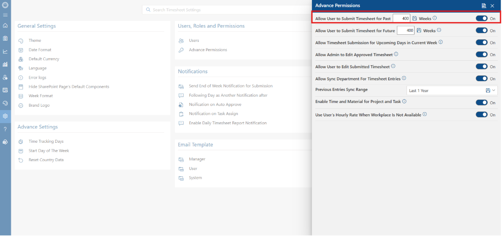
2. Allow User to Submit Timesheet for Future
Determines whether team members can log working hours for future dates ahead of time. Enter the maximum number of future weeks allowed and enable the setting to support advance timesheet logging.
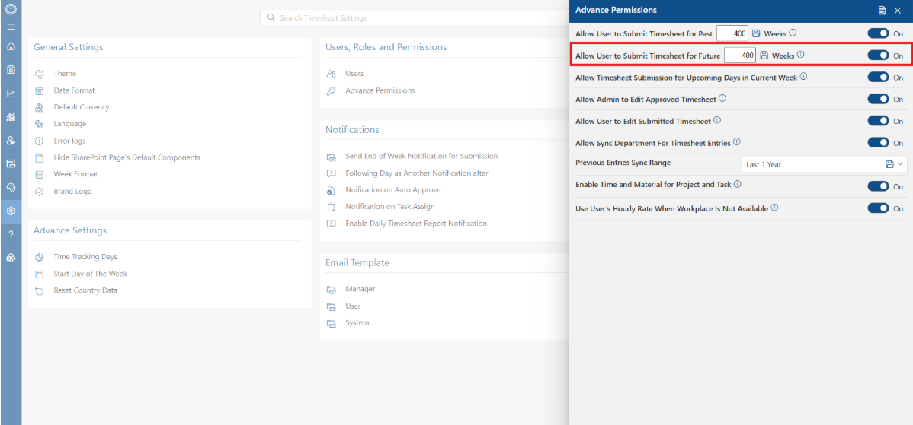
3. Allow Timesheet Submission for Upcoming Days in Current Week
Permits users to complete and submit timesheets for remaining days within the active week before those actual calendar dates occur, providing flexibility for planned absences or predictable weekly schedules.
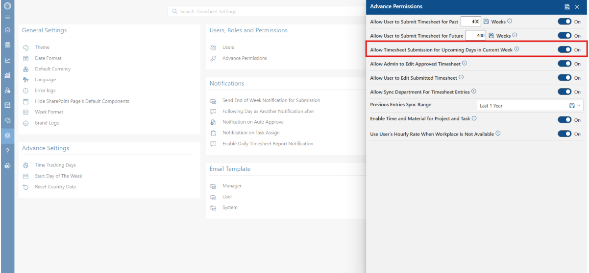
Editing & Organizational Permissions
1. Allow Admin to Edit Approved Timesheet
Grants system administrators the permission to modify timesheets that have already gone through the approval process. This capability ensures necessary administrative corrections or audit updates can be executed post-approval.
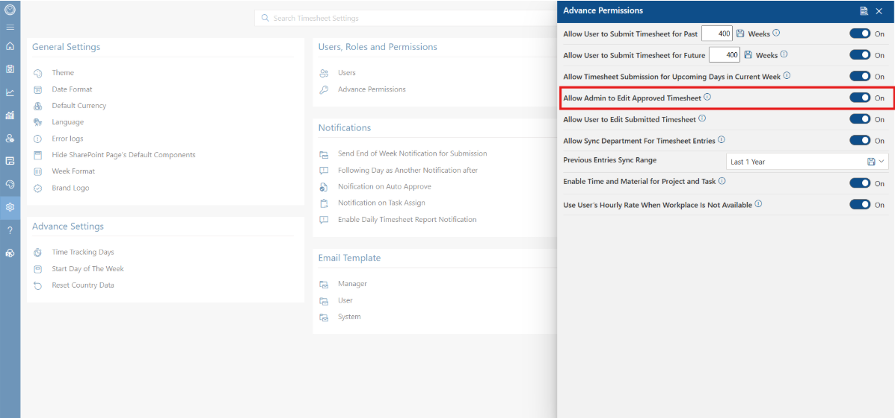
2. Allow User to Edit Submitted Timesheet
Controls whether employees can retract and edit timesheets that have been submitted but are still pending manager approval, adhering to organizational compliance policies.
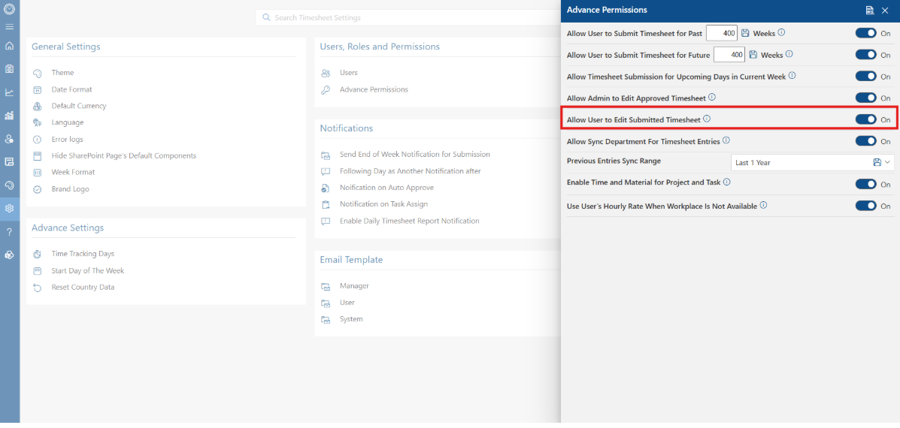
3. Allow Sync Department For Timesheet Entries
Enables automatic synchronization of department associations across timesheet entries, ensuring departmental data remains aligned with user profile changes over time.
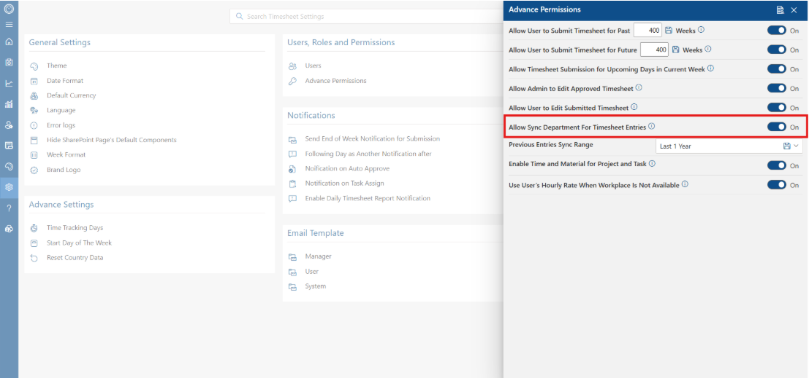
Data Synchronization & Billing Behavior
1. Previous Entries Sync Range
Specifies the historical time range (e.g., Last 1 Year) used when synchronizing past timesheet entries across system modules and external integrations.
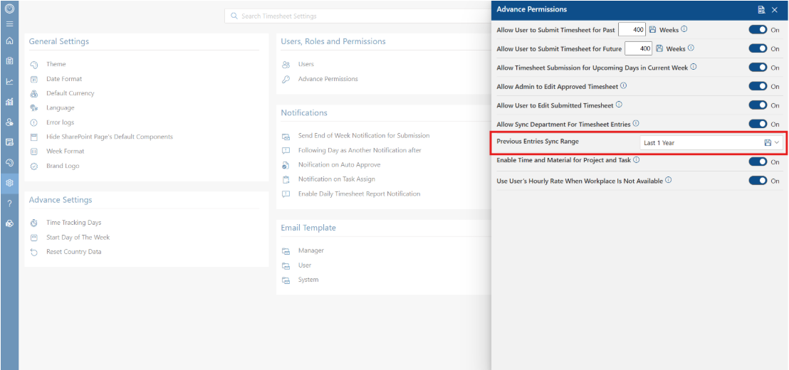
2. Enable Time and Material for Project and Task
Activates Time and Material (T&M) billing models at both the project and individual task levels, allowing accurate tracking of billable labor and associated project costs.
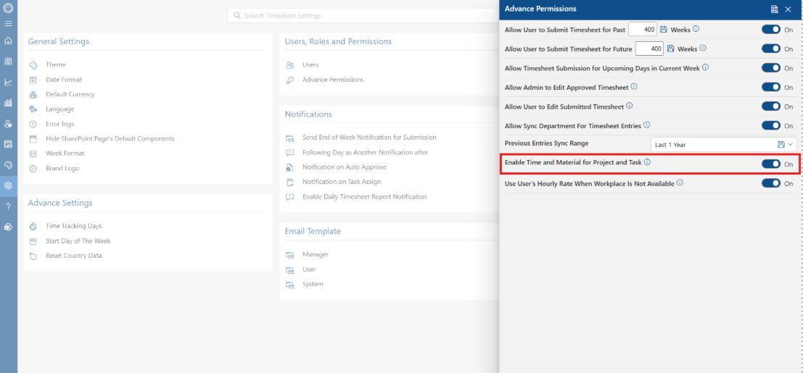
3. Use User's Hourly Rate When Workplace Is Not Available
Provides a fallback financial calculation rule: when a workplace-specific pay rate is not defined or available, the system defaults to using the user's primary base hourly rate for cost tracking.
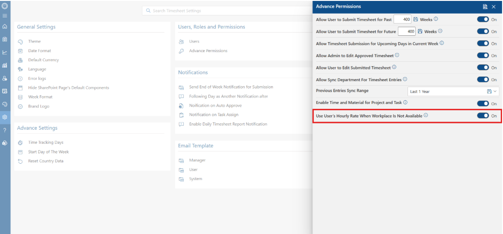